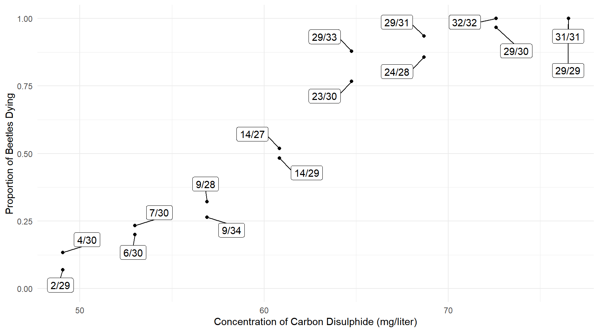
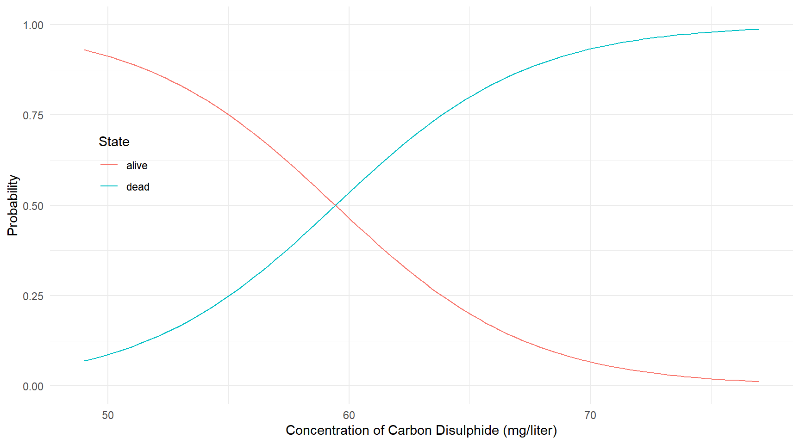
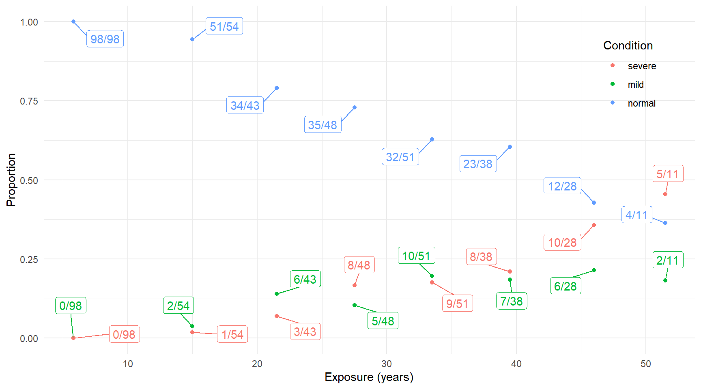
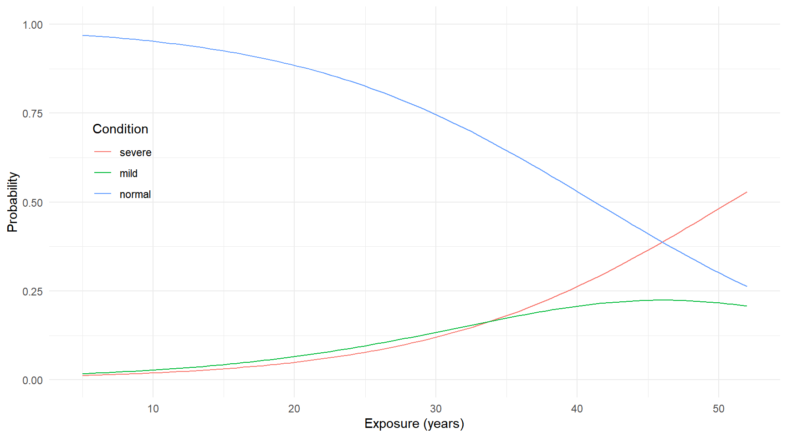
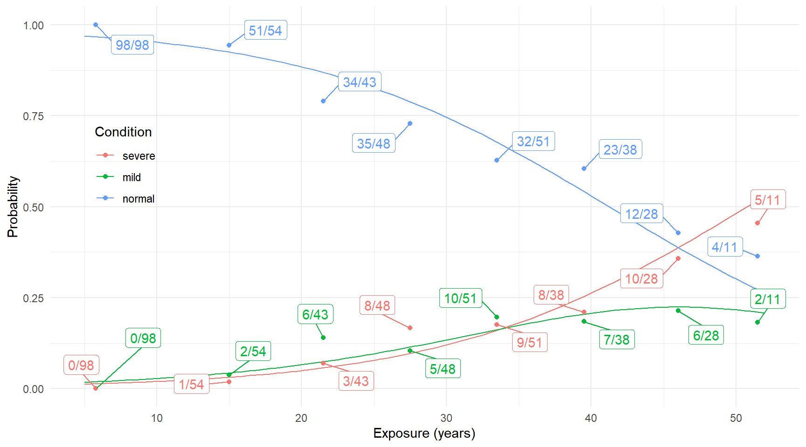
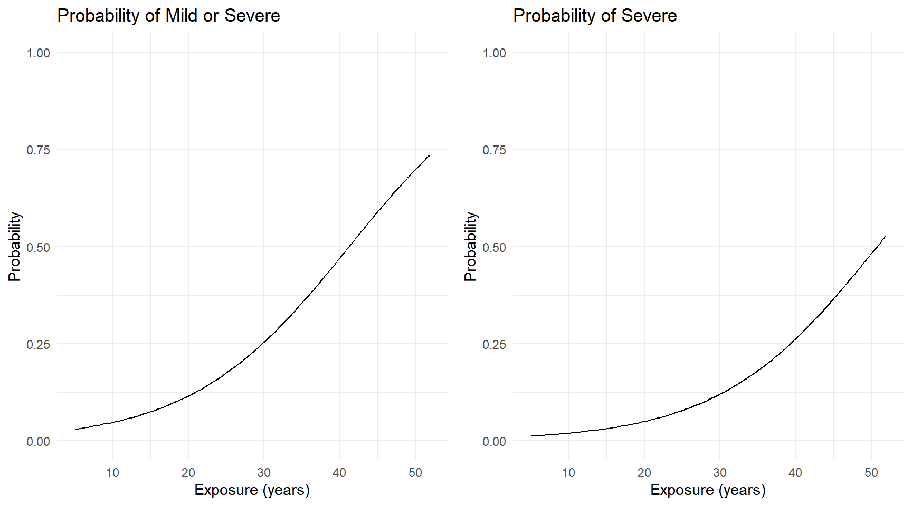
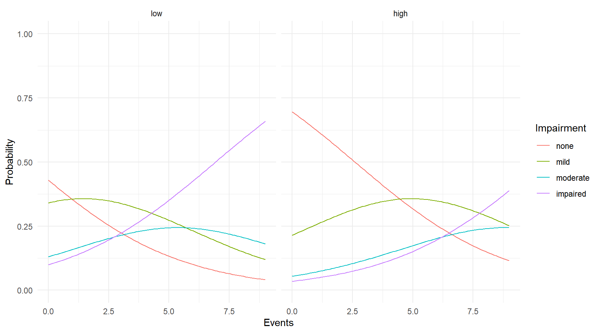
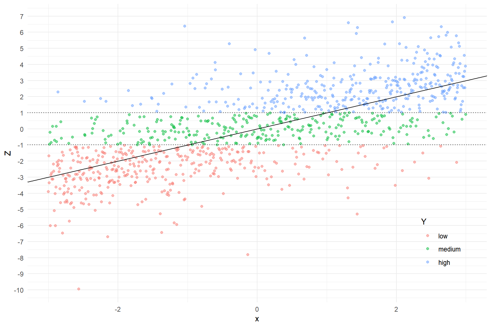

You can also download a PDF copy of this lecture.
A sequential regression model can sometimes be estimated using several binary regression models.
Example: Consider again the pneumo
data.
library(VGAM)
pneumo exposure.time normal mild severe
1 5.8 98 0 0
2 15.0 51 2 1
3 21.5 34 6 3
4 27.5 35 5 8
5 33.5 32 10 9
6 39.5 23 7 8
7 46.0 12 6 10
8 51.5 4 2 5# sequential regression model
m <- vglm(cbind(normal, mild, severe) ~ exposure.time,
family = cratio(link = "logitlink"), data = pneumo)
summary(m)
Call:
vglm(formula = cbind(normal, mild, severe) ~ exposure.time, family = cratio(link = "logitlink"),
data = pneumo)
Coefficients:
Estimate Std. Error z value Pr(>|z|)
(Intercept):1 -3.9664 0.4189 -9.47 < 2e-16 ***
(Intercept):2 -1.1133 0.7664 -1.45 0.146
exposure.time:1 0.0963 0.0124 7.79 6.9e-15 ***
exposure.time:2 0.0355 0.0206 1.72 0.085 .
---
Signif. codes: 0 '***' 0.001 '**' 0.01 '*' 0.05 '.' 0.1 ' ' 1
Names of linear predictors: logitlink(P[Y>1|Y>=1]), logitlink(P[Y>2|Y>=2])
Residual deviance: 13.29 on 12 degrees of freedom
Log-likelihood: -29.22 on 12 degrees of freedom
Number of Fisher scoring iterations: 6
Warning: Hauck-Donner effect detected in the following estimate(s):
'(Intercept):1'This model can be estimated using two logistic regression models. The first is a model for whether a miner will develop pneumoconiosis (i.e., mild or severe). This logistic regression model can be estimated as follows.
m1 <- glm(cbind(mild + severe, normal) ~ exposure.time, family = binomial, data = pneumo)
summary(m1)$coefficients Estimate Std. Error z value Pr(>|z|)
(Intercept) -3.96635 0.41893 -9.468 2.857e-21
exposure.time 0.09627 0.01236 7.786 6.898e-15Next we have the model for whether a miner with pneumoconiosis will develop severe pneumoconiosis (rather than mild). The logistic regression model for this probability can be estimated by effectively ignoring any observations where pneumoconiosis did not progress to mild or severe (i.e., exclude cases where it was normal).
m2 <- glm(cbind(severe, mild) ~ exposure.time, family = binomial, data = pneumo)
summary(m2)$coefficients Estimate Std. Error z value Pr(>|z|)
(Intercept) -1.11342 0.8625 -1.291 0.1967
exposure.time 0.03547 0.0235 1.509 0.1312We cannot estimate a sequential regression model with
separate binary models if we want to constrain some parameters to be
equal across the “steps” of the model (e.g., if we wanted to assume that
the odds ratio for the effect of exposure was the same at each step as
done below using the parallel = TRUE option.
m <- vglm(cbind(normal, mild, severe) ~ exposure.time,
family = cratio(link = "logitlink", parallel = TRUE), data = pneumo)
summary(m)
Call:
vglm(formula = cbind(normal, mild, severe) ~ exposure.time, family = cratio(link = "logitlink",
parallel = TRUE), data = pneumo)
Coefficients:
Estimate Std. Error z value Pr(>|z|)
(Intercept):1 -3.6077 0.3542 -10.19 < 2e-16 ***
(Intercept):2 -2.8605 0.4426 -6.46 1.0e-10 ***
exposure.time 0.0849 0.0104 8.13 4.2e-16 ***
---
Signif. codes: 0 '***' 0.001 '**' 0.01 '*' 0.05 '.' 0.1 ' ' 1
Names of linear predictors: logitlink(P[Y>1|Y>=1]), logitlink(P[Y>2|Y>=2])
Residual deviance: 18.3 on 13 degrees of freedom
Log-likelihood: -31.73 on 13 degrees of freedom
Number of Fisher scoring iterations: 5
Warning: Hauck-Donner effect detected in the following estimate(s):
'(Intercept):1'The logistic regression model for a binary response \(Y_i = 0,1\) can be written as \[ \log\left[\frac{P(Y_i=1)}{1-P(Y_i=1)}\right] = \beta_0 + \beta_1 x_{i1} + \cdots + \beta_k x_{ik}. \] This can also be written as \[ \log\left[\frac{P(Y_i>0)}{1-P(Y_i>0)}\right] = \beta_0 + \beta_1 x_{i1} + \cdots + \beta_k x_{ik}. \]
Now let the response variable \(Y_i = 1, 2, \dots, R\) denote \(R\) ordered response categories where order is implied by \(Y_i\). A proportional odds model is a logistic regression model for each of the \(R-1\) possible “dichotomizations” of the categories such that \[ \log\left[\frac{P(Y_i>y)}{1-P(Y_i>y)}\right] = \beta_0^{(y)} + \beta_1 x_{i1} + \cdots + \beta_k x_{ik} \] for \(y = 1, 2, \dots, R-1\). This defines a system of equations for each possible dichotomy. For example, suppose \(R=4\) and so \(Y_i = 1, 2, 3, 4\). The model is then written as \[\begin{align*} \log\left[\frac{P(Y_i > 1)}{1-P(Y_i > 1)}\right] & = \beta_0^{(1)} + \beta_1 x_{i1} + \cdots + \beta_k x_{ik}, \\ \log\left[\frac{P(Y_i > 2)}{1-P(Y_i > 2)}\right] & = \beta_0^{(2)} + \beta_1 x_{i1} + \cdots + \beta_k x_{ik}, \\ \log\left[\frac{P(Y_i > 3)}{1-P(Y_i > 3)}\right] & = \beta_0^{(3)} + \beta_1 x_{i1} + \cdots + \beta_k x_{ik}. \end{align*}\] The odds are proportional because (omitting the \(i\) subscript for simplicity) \[ \frac{P(Y>y)}{1-P(Y>y)} = e^{\beta_0^{(y)}}e^{\beta_1 x_{1}} \cdots e^{\beta_k x_{k}}, \] and so the odds ratio when we compare the odds at \(x_1 = x_a\) to \(x_1 = x_b\), \[ \frac{e^{\beta_0^{(y)}}e^{\beta_1 x_{a}} \cdots e^{\beta_k x_{k}}}{e^{\beta_0^{(y)}}e^{\beta_1 x_{b}} \cdots e^{\beta_k x_{k}}} = e^{\beta_1} \] does not depend on \(y\) (i.e., it does not depend how we dichotomize \(Y\)).
The system of equations allows us to express the probability of each response category as a function of the explanatory variables and parameters. From \[ \log\left[\frac{P(Y_i>y)}{1-P(Y_i>y)}\right] = \beta_0^{(y)} + \beta_1 x_{i1} + \cdots + \beta_k x_{ik} \] we get \[ P(Y_i > y) = \frac{\exp(\beta_0^{(y)} + \beta_1 x_{i1} + \cdots + \beta_k x_{ik})}{1 + \exp(\beta_0^{(y)} + \beta_1 x_{i1} + \cdots + \beta_k x_{ik})}, \] and then \[ P(Y_i = y) = P(Y_i > y-1) - P(Y_i > y), \] where \(P(Y_i > 0) = 1\) and \(P(Y_i > R) = 0\) by definition.
The distribution of a categorical response variable is assumed to be a multinomial distribution. The binomial distribution is a special case for when there are only \(R=2\) categories.
Example: Recall the bliss data that we
used to demonstrate logistic regression.
library(trtools) # for bliss data
library(ggrepel) # for geom_repel_label
bliss$proportion <- paste(bliss$dead, "/", bliss$exposed, sep = "")
bliss$alive <- bliss$exposed - bliss$dead
bliss concentration dead exposed proportion alive
1 49.06 2 29 2/29 27
2 49.06 4 30 4/30 26
3 52.99 7 30 7/30 23
4 52.99 6 30 6/30 24
5 56.91 9 28 9/28 19
6 56.91 9 34 9/34 25
7 60.84 14 27 14/27 13
8 60.84 14 29 14/29 15
9 64.76 23 30 23/30 7
10 64.76 29 33 29/33 4
11 68.69 29 31 29/31 2
12 68.69 24 28 24/28 4
13 72.61 29 30 29/30 1
14 72.61 32 32 32/32 0
15 76.54 29 29 29/29 0
16 76.54 31 31 31/31 0p <- ggplot(bliss, aes(x = concentration, y = dead/exposed)) +
geom_point() + ylim(0, 1) + theme_minimal() +
geom_label_repel(aes(label = proportion), box.padding = 0.75) +
labs(x = "Concentration of Carbon Disulphide (mg/liter)",
y = "Proportion of Beetles Dying")
plot(p)
m <- glm(cbind(dead, alive) ~ concentration, family = binomial, data = bliss)
summary(m)$coefficients Estimate Std. Error z value Pr(>|z|)
(Intercept) -14.8084 1.28976 -11.48 1.633e-30
concentration 0.2492 0.02138 11.65 2.250e-31The vglm function from the VGAM package
can be used to estimate a proportional odds model, but logistic
regression is a special case when there are only \(R=2\) response categories.
library(VGAM) # for the vglm function and others
m <- vglm(cbind(alive, dead) ~ concentration, family = propodds, data = bliss)
cbind(coef(m), confint(m)) 2.5 % 97.5 %
(Intercept) -14.8084 -17.3363 -12.2806
concentration 0.2492 0.2073 0.2911But note that we specify the order of the response
categories in cbind from left to right when using
vglm, which is opposite of how it is done when using
glm.
Here we can plot the probabilities of the two categories as a function of concentration.
d <- data.frame(concentration = seq(49, 77, length = 100))
d <- cbind(d, predict(m, newdata = d, type = "response"))
head(d) concentration alive dead
1 49.00 0.9308 0.06920
2 49.28 0.9261 0.07388
3 49.57 0.9212 0.07884
4 49.85 0.9159 0.08412
5 50.13 0.9103 0.08971
6 50.41 0.9044 0.09563library(tidyr)
d <- d %>% pivot_longer(cols = c(dead,alive),
names_to = "state", values_to = "probability")
head(d)# A tibble: 6 x 3
concentration state probability
<dbl> <chr> <dbl>
1 49 dead 0.0692
2 49 alive 0.931
3 49.3 dead 0.0739
4 49.3 alive 0.926
5 49.6 dead 0.0788
6 49.6 alive 0.921 p <- ggplot(d, aes(x = concentration, y = probability)) +
geom_line(aes(color = state)) +
ylim(0, 1) + theme_minimal() + theme(legend.position = c(0.1, 0.6)) +
labs(x = "Concentration of Carbon Disulphide (mg/liter)",
y = "Probability", color = "State")
plot(p)
Example: Consider again the pneumo data
frame included with the VGAM package.
print(pneumo) exposure.time normal mild severe
1 5.8 98 0 0
2 15.0 51 2 1
3 21.5 34 6 3
4 27.5 35 5 8
5 33.5 32 10 9
6 39.5 23 7 8
7 46.0 12 6 10
8 51.5 4 2 5 We can estimate a proportional odds model for these data as follows.
m <- vglm(cbind(normal, mild, severe) ~ exposure.time, family = propodds, data = pneumo)
summary(m)
Call:
vglm(formula = cbind(normal, mild, severe) ~ exposure.time, family = propodds,
data = pneumo)
Coefficients:
Estimate Std. Error z value Pr(>|z|)
(Intercept):1 -3.95572 0.26269 -15.1 <2e-16 ***
(Intercept):2 -4.86892 0.29628 -16.4 <2e-16 ***
exposure.time 0.09590 0.00749 12.8 <2e-16 ***
---
Signif. codes: 0 '***' 0.001 '**' 0.01 '*' 0.05 '.' 0.1 ' ' 1
Names of linear predictors: logitlink(P[Y>=2]), logitlink(P[Y>=3])
Residual deviance: 13.4 on 13 degrees of freedom
Log-likelihood: -29.28 on 13 degrees of freedom
Number of Fisher scoring iterations: 18
Warning: Hauck-Donner effect detected in the following estimate(s):
'(Intercept):2'
Exponentiated coefficients:
exposure.time
1.101 That “exponentiated coefficient” is the odds ratio for the effect of exposure time. We can also get that with a confidence interval as follows.
exp(cbind(coef(m), confint(m))) 2.5 % 97.5 %
(Intercept):1 0.019145 0.011441 0.03204
(Intercept):2 0.007682 0.004298 0.01373
exposure.time 1.100650 1.084618 1.11692d <- data.frame(exposure.time = seq(5, 52, length = 100))
d <- cbind(d, predict(m, newdata = d, type = "response"))
head(d) exposure.time normal mild severe
1 5.000 0.9700 0.01774 0.01226
2 5.475 0.9686 0.01853 0.01282
3 5.949 0.9672 0.01935 0.01341
4 6.424 0.9658 0.02021 0.01402
5 6.899 0.9642 0.02111 0.01467
6 7.374 0.9626 0.02204 0.01534library(tidyr)
d <- d %>% pivot_longer(cols = c(normal, mild, severe),
names_to = "condition", values_to = "probability")
head(d)# A tibble: 6 x 3
exposure.time condition probability
<dbl> <chr> <dbl>
1 5 normal 0.970
2 5 mild 0.0177
3 5 severe 0.0123
4 5.47 normal 0.969
5 5.47 mild 0.0185
6 5.47 severe 0.0128And then we can plot as usual. Here I have specified an order of the categories so that the colors are consistent with the plot of the raw data.
d$condition <- factor(d$condition, levels = c("severe","mild","normal"))
p <- ggplot(d, aes(x = exposure.time, y = probability)) +
geom_line(aes(color = condition)) +
ylim(0, 1) + theme_minimal() + theme(legend.position = c(0.1, 0.6)) +
labs(x = "Exposure (years)", y = "Probability", color = "Condition")
plot(p) 
Another way to view the model is through cumulative probabilities that reflect the dichotomization.
d <- data.frame(exposure.time = seq(5, 52, length = 100))
d <- cbind(d, predict(m, newdata = d, type = "response"))
p <- ggplot(d, aes(x = exposure.time, y = mild + severe)) +
geom_line() + ylim(0,1) + theme_minimal() +
labs(x = "Exposure (years)", y = "Probability")
p1 <- p + ggtitle("Probability of Mild or Severe")
p <- ggplot(d, aes(x = exposure.time, y = severe)) +
geom_line() + ylim(0,1) + theme_minimal() +
labs(x = "Exposure (years)", y = "Probability")
p2 <- p + ggtitle("Probability of Severe")
cowplot::plot_grid(p1, p2)
Data that are not in aggregated form require a slightly different approach to enforce the ordering of the response categories.
Example: Consider the data frame
impairment from the trtools package.
library(trtools)
head(impairment,3) impairment ses events
1 none high 1
2 none high 9
3 none high 4summary(impairment) impairment ses events
impaired: 9 high:22 Min. :0.00
mild :12 low :18 1st Qu.:2.00
moderate: 7 Median :4.00
none :12 Mean :4.28
3rd Qu.:6.25
Max. :9.00 The ordering of the levels is not consistent with the ordering of impairment.
levels(impairment$impairment)[1] "impaired" "mild" "moderate" "none" But the ordering can be changed using factor.
impairment$impairment <- factor(impairment$impairment,
levels = c("none","mild","moderate","impaired"), ordered = TRUE)
levels(impairment$impairment)[1] "none" "mild" "moderate" "impaired"Now we can estimate a proportional odds model.
m <- vglm(impairment ~ ses + events, family = propodds, data = impairment)
cbind(coef(m), confint(m)) 2.5 % 97.5 %
(Intercept):1 -0.8290 -1.7234 0.0654
(Intercept):2 -2.3237 -3.2651 -1.3823
(Intercept):3 -3.3202 -4.4298 -2.2106
seslow 1.1113 0.4004 1.8223
events 0.3187 0.1808 0.4567Applying the exponential function provides odds ratios.
exp(cbind(coef(m), confint(m))) 2.5 % 97.5 %
(Intercept):1 0.43648 0.17846 1.0676
(Intercept):2 0.09791 0.03819 0.2510
(Intercept):3 0.03614 0.01192 0.1096
seslow 3.03846 1.49243 6.1860
events 1.37540 1.19816 1.5788We can plot the estimated probabilities as we did in the previous example.
d <- expand.grid(ses = c("low","high"), events = seq(0, 9, length = 100))
d <- cbind(d, predict(m, newdata = d, type = "response"))
head(d) ses events none mild moderate impaired
1 low 0.00000 0.4299 0.3408 0.13033 0.09896
2 high 0.00000 0.6961 0.2147 0.05430 0.03488
3 low 0.09091 0.4228 0.3428 0.13288 0.10157
4 high 0.09091 0.6900 0.2185 0.05569 0.03587
5 low 0.18182 0.4157 0.3446 0.13545 0.10424
6 high 0.18182 0.6837 0.2223 0.05711 0.03689library(tidyr)
d <- d %>% pivot_longer(cols = c(none, mild, moderate, impaired),
names_to = "impairment", values_to = "probability")
head(d)# A tibble: 6 x 4
ses events impairment probability
<fct> <dbl> <chr> <dbl>
1 low 0 none 0.430
2 low 0 mild 0.341
3 low 0 moderate 0.130
4 low 0 impaired 0.0990
5 high 0 none 0.696
6 high 0 mild 0.215 For our plot it would be nice to have the levels of impairment
ordered. We can do this by (re)creating the factor and putting the
levels in the desired order. Note that ordered = TRUE isn’t
necessary here.
d$impairment <- factor(d$impairment,
levels = c("none","mild","moderate","impaired"))
p <- ggplot(d, aes(x = events, y = probability, color = impairment)) +
geom_line() + ylim(0,1) + theme_minimal() + facet_wrap(~ ses) +
labs(x = "Events", y = "Probability", color = "Impairment")
plot(p)
Assume a linear model for a latent (i.e., unobserved) response variable \(Z_i\) such that \[ Z_i = \beta_0 + \beta_1 x_{i1} + \dots + \beta_k x_{ik} + \epsilon_i, \] and assume that \(Y_i\) arises from interval-censoring of \(Z_i\). For example, with \(R\) = 4 intervals we would have \[ Y_i = \begin{cases} 1, & \text{if $Z_i \le \delta_{1}$}, \\ 2, & \text{if $\delta_{1} < Z_i \le \delta_{2}$}, \\ 3, & \text{if $\delta_{2} < Z_i \le \delta_{3}$}, \\ 4, & \text{if $\delta_{3} < Z_i$}, \end{cases} \] where \(\delta_1 < \delta_2 < \delta_3\).
If the distribution of \(Z_i\) is logistic then the model for \(Y_i\) is a proportional odds model. Other models can be derived by assuming different distributions of \(Z_i\). However if the “thresholds” (i.e, \(\delta_1, \delta_2, \dots, \delta_{R-1}\)) are unknown, then the origin and scale of \(Z_i\) are not uniquely defined. This can be resolved by setting \(\beta_0\) = 0 and the variance/scale parameter of \(\epsilon_i\) to one.
Example: We can see the connection between interval-censoring and a proportional odds model using simulated data.
# create some data
set.seed(123)
x <- seq(-3, 3, length = 1000)
z <- x + rlogis(length(x))
y <- cut(z, c(-Inf, -1, 1, Inf), labels = c("low","medium","high"))
d <- data.frame(x = x, z = z, y = y)
If we know that \(Y_i\) is
interval-censored at \(Y\) = -1 and
\(Y\) = 1 then we can estimate this
model using survreg since it will handle the censoring.
library(dplyr)
d <- d %>%
mutate(lower = case_when(y == "medium" ~ -1, y == "high" ~ 1)) %>%
mutate(upper = case_when(y == "low" ~ -1, y == "medium" ~ 1))Note that case_when will return NA values
for other cases, which is what we want. Here are a few observations.
d[c(1,500,1000),] x z y lower upper
1 -3.000000 -3.9072 low NA -1
500 -0.003003 1.3035 high 1 NA
1000 3.000000 0.8972 medium -1 1Estimate a model for an interval-censored logistic-distributed response variable.
library(survival)Warning: package 'survival' was built under R version 4.1.3m <- survreg(Surv(lower, upper, type = "interval2") ~ x, dist = "logistic", data = d)
summary(m)$table Value Std. Error z p
(Intercept) -0.06696 0.07299 -0.9173 3.590e-01
x 1.05888 0.05962 17.7615 1.405e-70
Log(scale) 0.08994 0.05595 1.6074 1.080e-01If we do not know where \(Y_i\) is censored (but assume it is at the
same values for all observations) then we can estimate the model using
vglm.
d$y <- factor(d$y, levels = c("low","medium","high"), ordered = TRUE)
m <- vglm(y ~ x, family = propodds, data = d)
cbind(coef(m), confint(m)) 2.5 % 97.5 %
(Intercept):1 0.8528 0.6985 1.0071
(Intercept):2 -0.9752 -1.1323 -0.8181
x 0.9678 0.8896 1.0459Note that the estimates of \(\beta_1\) are similar but not identical. This is due to having different information. In the proportional odds model the thresholds are unknown and must be estimated, whereas in the “survival” model they were treated as known.